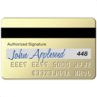

At biitle.nl, we develop great software - such as FluidServer, ppddvv, and Libracino.

ppddvv (POS System)
FluidServer is an open-source POS server.
Libracino is an open-source library system.
Netdeck visualizes OpenAPI specifications.
Notboard is a school management system.